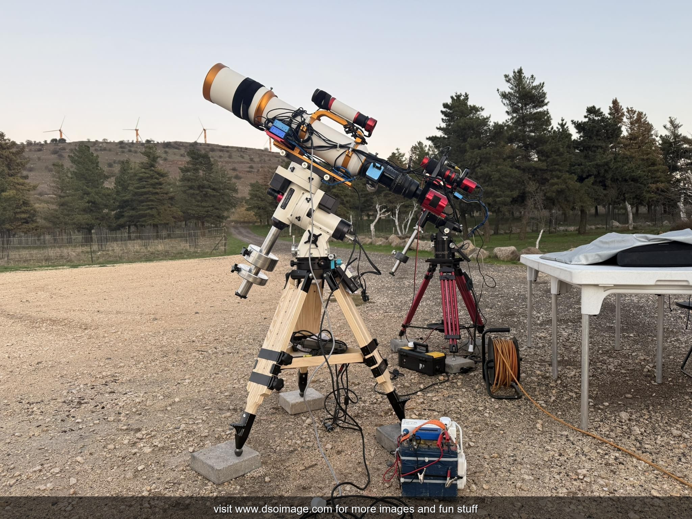
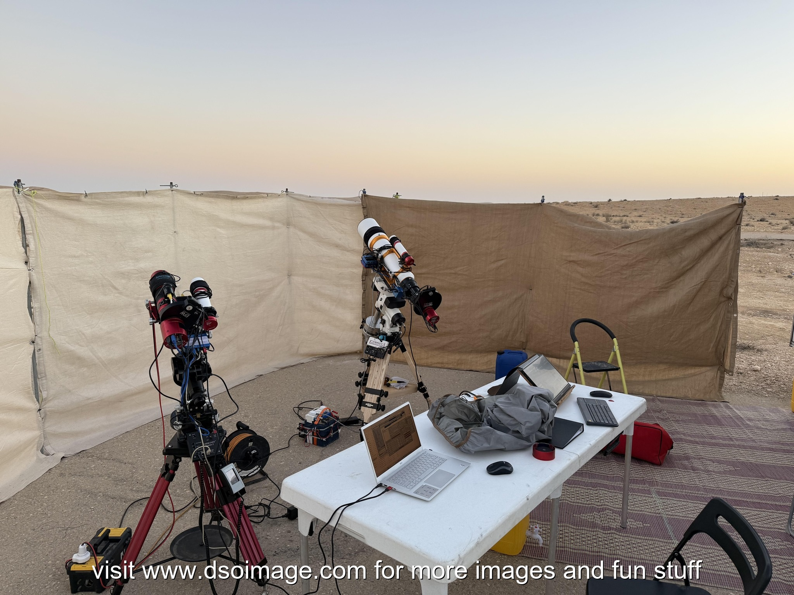
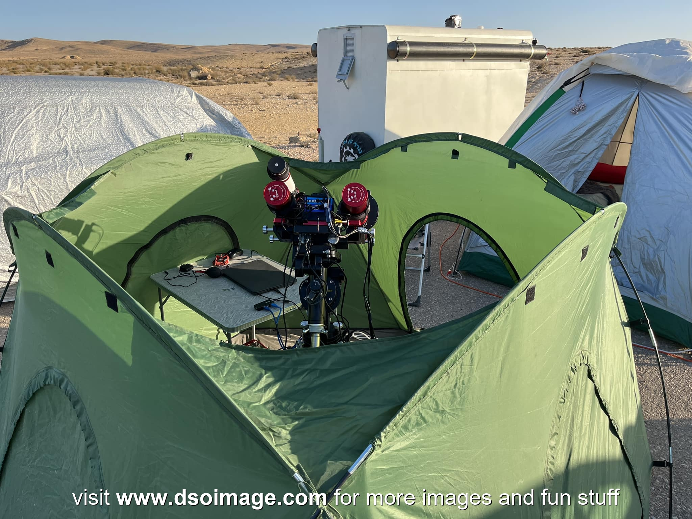
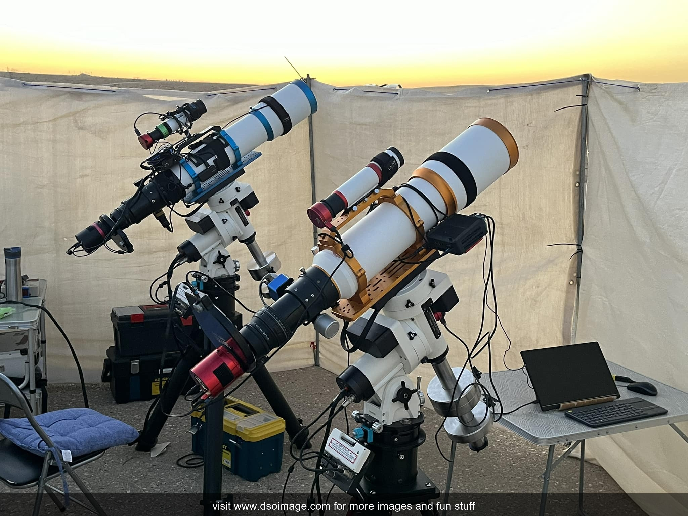

Equipment
Here is an overview of the astrophotography equipment I use:
- Telescopes: William Optics FLT 132, William Optics RedCat 51, Celestron EdgeHD 9.25"
- Cameras: Atik 16200 Mono, ZWO ASI 2600 Mono
- Mounts: Astro-Physics Mach2, Losmandy G11, Paramount MX+
- Filters: 2" Chroma LRGB + Ha/OIII/SII (3nm)
- Software: PixInsight, Photoshop
This setup allows long integrations with high stability and precise tracking. I frequently combine multiple focal lengths (for example, high-resolution luminance with wider-field RGB) depending on the target.
Imaging Setups

Imaging in the Golan Heights — Bortle 4 skies

Imaging in the Negev Desert — Bortle 3 skies

Desert imaging configuration

ASI 2600 Mono vs. QHY 268M